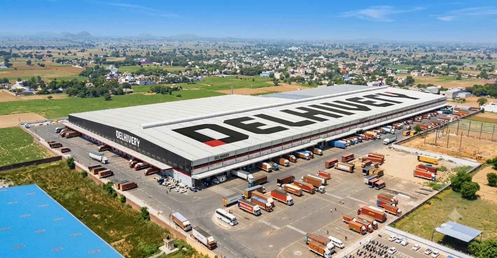
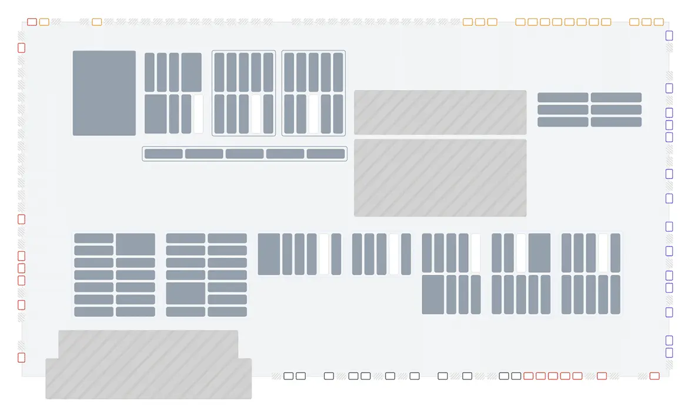
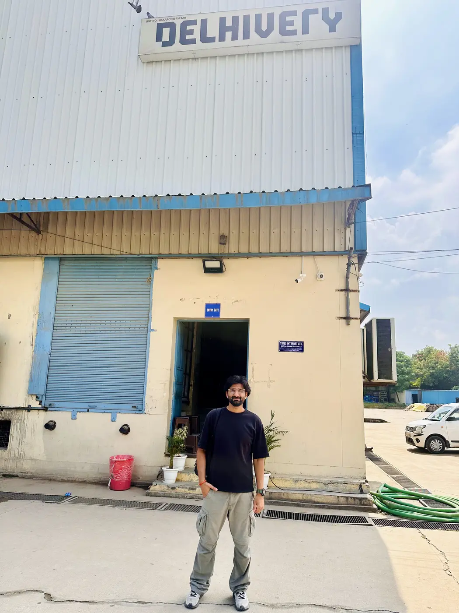
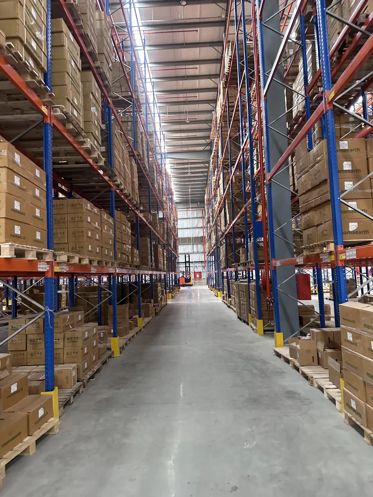
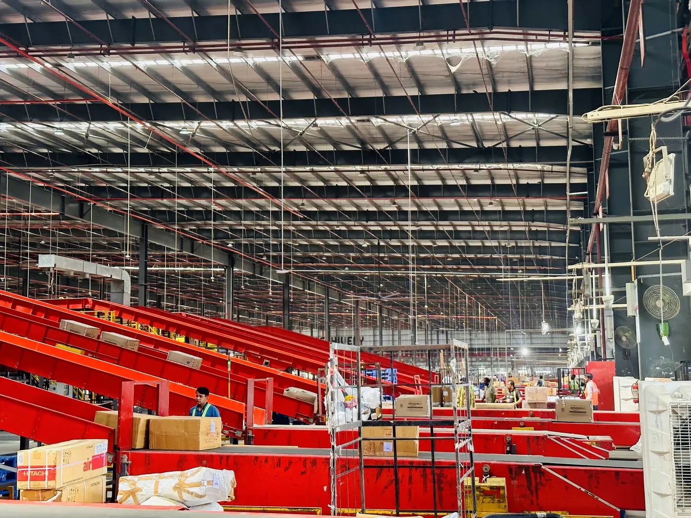
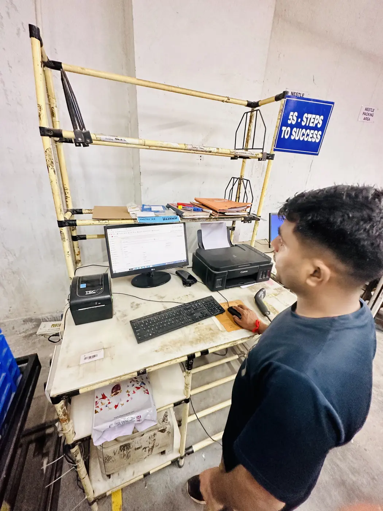
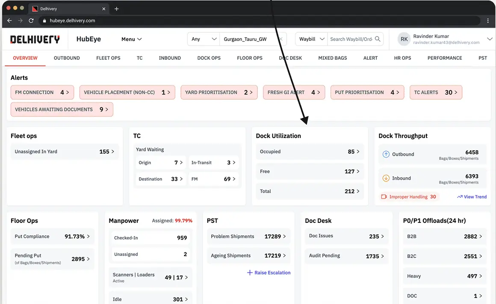
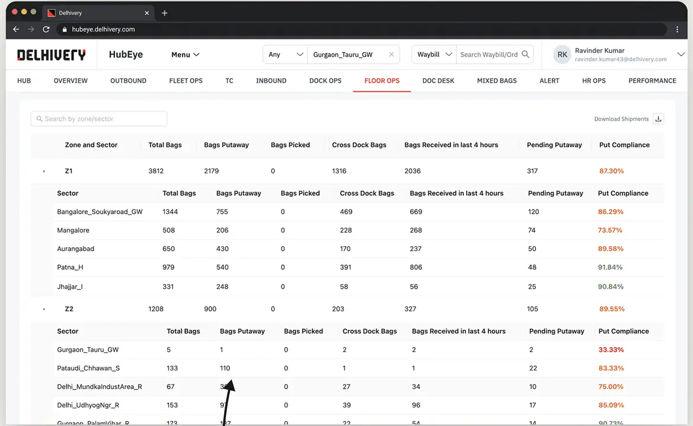
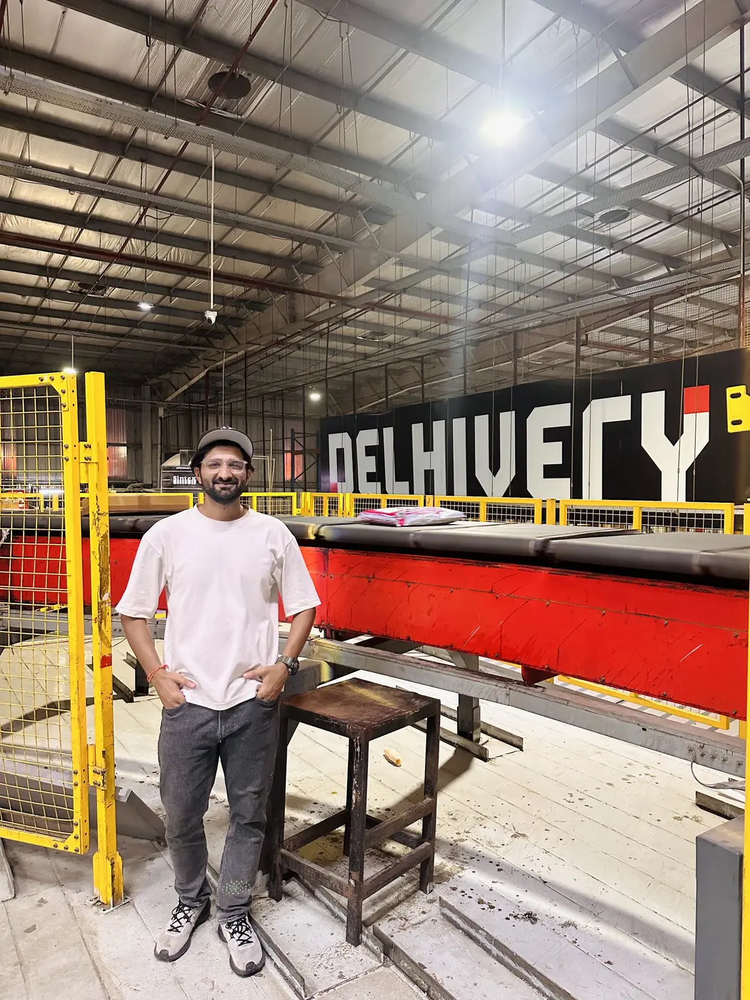

Hub managers were chasing ageing and missing shipments, fielding escalation calls and firefighting delays, and every peak multiplied it. Instead of patching the dashboard, we mapped the physical hub into a live digital twin.
View presentation
Behind the ask: managers lost in ageing and missing shipments, delays and escalations, worst at peak.
HubEye was everyone's source of truth, yet it was dense tables with no guidance, so teams rarely used it.
A live digital twin of the facility: shipments, operations, resources and blockers where they really are.
Put compliance 65% → 79%, on-time departures 46% → 54%, shipment ageing down 8%.
We were asked to redesign the HubEye dashboard. Behind that ask, field managers and facility managers kept raising the same questions, every shift.
Bags sat in a sector for hours, and nobody knew until a customer promise was already late.
Missing shipments meant walking the floor and calling around until someone found them.
Every update to senior stakeholders was rebuilt by hand, under time pressure.
Delays led to chase calls and a needlessly stressful floor. At peak, all of it multiplied into real business loss.
India's largest mid-mile network runs through these hubs. Some exceed 1.2 million square feet, with docks, inbound zones and sectors needing decisions in minutes.






Before touching a pixel, we met the people living the problem: field managers, facility managers, supervisors and floor teams. We watched docks unload, walked the sorter and sat beside each shift, looking for where the gap really was and how design could close it.




Supervisors don't ask "which row in the table"; they ask "which dock" and walk there.
There's no time to read. A screen has to be understood in a glance from across the room.
For tracking and transparency, every manager and team member used one source of truth: HubEye. So that is where we looked next.
We evaluated its usability: how often people opened it, what they did there and what feedback they kept giving. The answer was clear. A read-only wall of tiles and tables across 14 tabs, heavy with data and with no guidance: no priority, no reason, no next step. Most people simply stopped opening it.
Counts without context. A supervisor saw "155 unassigned" but not where, or why.
Fleet, dock, floor, inbound and outbound lived in separate tabs, so no single view of the hub.
Sector health meant scanning long tables of bags, putaway and compliance by hand.
Export, clean in Excel, pivot, then spot the bottleneck: 6+ hours lost every shift.




We could have answered the feedback one request at a time: a filter here, a column there. That is useful, but it keeps the feedback loop running forever. Rethinking the whole experience could remove the reasons behind the feedback instead.
Ship what people ask for, tab by tab. Quick wins, same passive dashboard.
Cleaner charts and better tables. Easier to read, still nothing to act on.
Change what the screen represents, so it answers "what, where and why" before anyone asks.
A hub is a physical place. Managers think in docks, sectors and lanes, not table rows. Digital twins already existed in industry, but no one had pointed one at our hubs. So we set out to build a digital twin of the mega facility, showing in real time:
Everyone we shared it with, from floor supervisors to central ops, liked the idea immediately. So we began building the digital twin of HubEye.
We rebuilt HubEye as a digital twin of the physical facility. Every dock, sector and yard lane sits where it is on the floor, so a supervisor can look at the screen and walk straight to the issue.

Normal is grey, act now is red. A supervisor scanning 300+ sectors and docks finds every critical zone in seconds.
Docks around the edge, sectors in their rows, areas outlined. Location is the first piece of information.
The map, the reason and the hub's vitals live together, so nobody exports to Excel to decide.
Every element opens a small card: bags in the centre, ETD, and only the signals that matter. Red rows say what is wrong; green rows confirm what is fine.


A persistent snapshot panel sits beside the map: shipments in centre and ageing, yard waiting, inbound and outbound docks, manpower, put compliance, sorter rejection, PTL breaches and pallet stock.


Expected Yard Waiting forecasts vehicles in the yard against planned docks, hour by hour, with the overflow in red. Floor Images bring the real dock and floor cameras into the same tool, so a red dock can be checked in one click.


In the first few weeks after launch, the operations team came back with something a dashboard rarely gets: appreciation. Teams who had barely engaged with the old HubEye now keep the twin open on their laptops through the shift, watching the hub move.
People opened HubEye when someone asked them to, then exported to Excel to make sense of it.
The twin stays on screen all shift. Problems are seen as they start, not after a call.
No chasing, no waiting for someone to check. One shared live view of the hub for every team.
Measured across hubs after rollout: fewer stuck shipments, more promises kept and real cost saved. The Ionad hub saw the biggest drop in ageing.
The map is the foundation for a true digital twin of Delhivery's growing warehouse network: test a change on screen before moving a single rack.
Layout changes are risky and costly on a live floor. Simulate them first instead of trial and error.
Labour and energy costs keep rising. Spot the waste in flow and staffing before it shows up in the P&L.
Sale events bring 3× volume. Replace capacity guesswork with tested plans to protect SLAs.
I led design direction, critique and stakeholder alignment, working across design, product, engineering and hub operations from the first floor visit to rollout.

